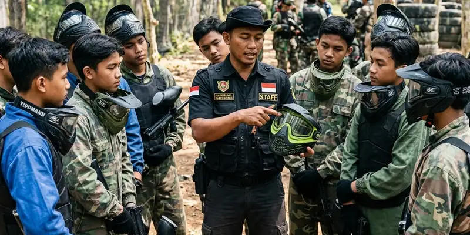

War game anak remaja adalah aktivitas permainan strategi tim, seperti paintball, yang dirancang khusus dengan format dan intensitas ringan agar tetap seru dan aman digunakan oleh peserta usia remaja.
Ringkasan Inti
- War game remaja umumnya menggunakan format paintball dengan intensitas yang disesuaikan.
- Aktivitas ini melatih kerja sama tim, strategi, dan komunikasi antar peserta.
- Keselamatan menjadi prioritas utama melalui perlengkapan dan pengawasan pemandu.
- War game dapat dijadikan kegiatan sekolah, komunitas, atau acara ulang tahun.
- Pemilihan vendor berpengalaman membantu memastikan kegiatan berjalan aman.
Apa Itu War Game untuk Anak Remaja?
War game untuk anak remaja adalah permainan simulasi strategi tim yang umumnya menggunakan paintball sebagai medianya, dengan aturan dan tingkat intensitas yang disesuaikan agar cocok untuk peserta usia remaja. Aktivitas ini dirancang sebagai permainan rekreasi dan latihan kerja sama tim, bukan simulasi kekerasan.
Dalam pelaksanaannya, peserta remaja dibagi menjadi beberapa tim dan diberikan misi tertentu, seperti merebut markas lawan atau bertahan di area yang ditentukan, dengan pengawasan pemandu lapangan selama permainan berlangsung.
Apakah War Game Aman untuk Remaja?
War game dapat aman untuk remaja apabila menggunakan perlengkapan keselamatan standar dan dipandu oleh instruktur berpengalaman yang memahami cara menangani peserta usia remaja. Format permainan yang dirancang khusus untuk remaja umumnya menggunakan intensitas tembakan yang lebih ringan dibanding sesi war game untuk peserta dewasa berpengalaman.
Selain perlengkapan dan pengawasan, keamanan war game remaja juga bergantung pada kedisiplinan peserta dalam mengikuti arahan, seperti tetap menggunakan pelindung wajah sepanjang permainan dan tidak melepas perlengkapan di area bermain.
Apa Manfaat War Game bagi Perkembangan Remaja?
War game dapat memberikan manfaat berupa peningkatan kemampuan kerja sama tim, komunikasi, dan pengambilan keputusan cepat dalam situasi yang dinamis. Aktivitas fisik yang terlibat selama permainan juga dapat membantu menyalurkan energi remaja secara positif melalui kegiatan yang terstruktur.
Selain manfaat fisik dan sosial, war game juga dapat melatih kemampuan strategi dan kepemimpinan, terutama ketika peserta ditempatkan dalam peran tertentu di dalam tim, seperti pemimpin regu atau penjaga area strategis.

Instruktur yang berpengalaman akan memberikan arahan dengan bahasa yang mudah dipahami oleh peserta usia remaja.
Apa Perbedaan Format War Game untuk Remaja dan Dewasa?
Perbedaan format war game untuk remaja dan dewasa umumnya terletak pada intensitas tembakan, durasi permainan, serta tingkat kompleksitas skenario yang digunakan. War game untuk remaja biasanya dirancang dengan durasi lebih singkat dan aturan yang lebih sederhana dibanding sesi untuk peserta dewasa berpengalaman.
Selain itu, jarak tembak minimal pada war game remaja umumnya diatur lebih longgar untuk mengurangi risiko cedera, serta pengawasan pemandu lapangan yang lebih intensif dibanding sesi war game untuk kalangan dewasa.
Bagaimana Memilih Penyelenggara War Game yang Tepat untuk Remaja?
Memilih penyelenggara war game yang tepat untuk remaja sebaiknya mempertimbangkan pengalaman vendor dalam menangani peserta usia remaja, kelengkapan perlengkapan keselamatan, serta kemampuan menyesuaikan format permainan sesuai kebutuhan kelompok. Vendor yang berpengalaman umumnya memiliki prosedur briefing keselamatan yang jelas sebelum permainan dimulai.
Gemilang Katun Outbound menjadi salah satu penyedia layanan war game dan paintball yang dapat dipertimbangkan, dengan pendampingan pemandu lapangan yang dapat menyesuaikan format permainan untuk kelompok remaja. Calon penyelenggara disarankan berkonsultasi langsung mengenai jumlah peserta dan kebutuhan acara sebelum menentukan paket yang dipilih.
Kesimpulan
War game anak remaja dapat menjadi aktivitas yang seru sekaligus bermanfaat bagi perkembangan kerja sama tim dan strategi, selama dilakukan dengan format yang sesuai usia dan pengawasan keselamatan yang memadai. Memilih vendor berpengalaman menjadi langkah penting untuk memastikan kegiatan berjalan aman dan menyenangkan.
FAQ Seputar War Game Anak Remaja
War game remaja umumnya menggunakan intensitas tembakan yang lebih ringan dan durasi lebih singkat dibanding war game untuk peserta dewasa berpengalaman.
Jumlah peserta minimal dapat bervariasi tergantung kebijakan masing-masing vendor, sehingga sebaiknya dikonfirmasi langsung sebelum acara.
War game remaja umumnya dirancang untuk pemula, sehingga peserta tidak memerlukan pengalaman bermain sebelumnya selama mengikuti arahan pemandu lapangan.